AutoFix Agent란?
AutoFix Agent는 WhaTap 모니터링에서 이상을 감지하면, AI가 자동으로 원인을 분석하고 수정안을 제시하는 서버 운영 자동화 도구입니다. CPU 급등, 응답 지연, 에러율 증가 등 장애 징후가 포착되면 사람이 개입하기 전에 5단계 파이프라인이 순차적으로 실행됩니다.
이상 감지
상관 메트릭 산출
코드 패치 / 권장 조치
또는 시뮬레이션
해결 여부 판정
이 파이프라인에서 Analyzer와 Fixer는 AI(LLM)를 사용합니다. AutoFix Agent는 AI를 직접 호출하지 않고 SessionCast라는 릴레이 서비스를 통해 개발자 로컬에 설치된 AI CLI에 작업을 위임합니다. 아래에서 그 이유를 설명합니다.
왜 SessionCast가 필요한가?
SessionCast
로컬 AI CLI를 원격에서 사용할 수 있게 해주는 세션 릴레이 서비스
AutoFix Agent는 이상 감지 후 AI에게 원인 분석과 수정안 생성을 요청합니다. 이때 외부 AI API를 직접 호출하는 대신, SessionCast Relay를 통해 개발자 로컬 머신에 설치된 AI CLI(Claude Code, Codex 등)에 작업을 위임합니다.
로컬 AI를 쓰는 이유
- API 키 불필요 — 서버에 OpenAI/Anthropic API 키를 넣지 않아도 됩니다. 로컬 CLI가 이미 인증된 상태이므로 별도 과금 설정이 필요 없습니다.
- 모델 선택 자유 — 로컬에 설치된 AI CLI가 지원하는 모델이면 무엇이든 사용 가능합니다. Claude, GPT, 로컬 LLM 등 개발자가 원하는 모델을 선택할 수 있습니다.
- 보안 — 서버 메트릭과 코드 분석 데이터가 개발자 로컬 환경 내에서 처리됩니다. 민감한 운영 데이터가 외부 API로 직접 전송되지 않습니다.
동작 흐름
SessionCast 없이도 동작합니다. SessionCast에 연결되지 않으면 Analyzer는 규칙 기반 폴백 분석을, Fixer는 사전 정의된 권장 조치를 사용합니다. AI 분석의 품질과 맞춤형 수정안을 원할 때 SessionCast를 연결하세요.
로그인
http://localhost:8095 에 접속하여 WhaTap 계정으로 로그인합니다
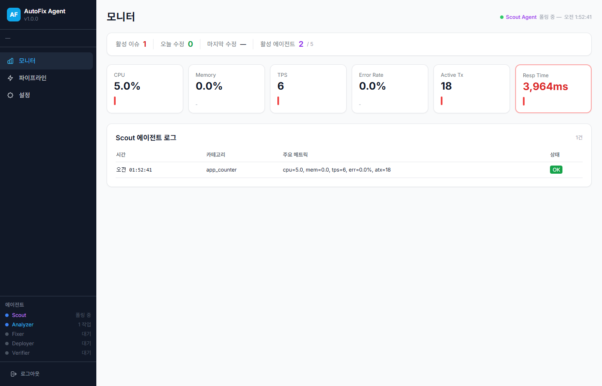
SessionCast (좌측): 배포 세션 녹화용 토큰 — 선택사항
WhaTap (우측): 모니터링 연결을 위한 로그인 — 필수
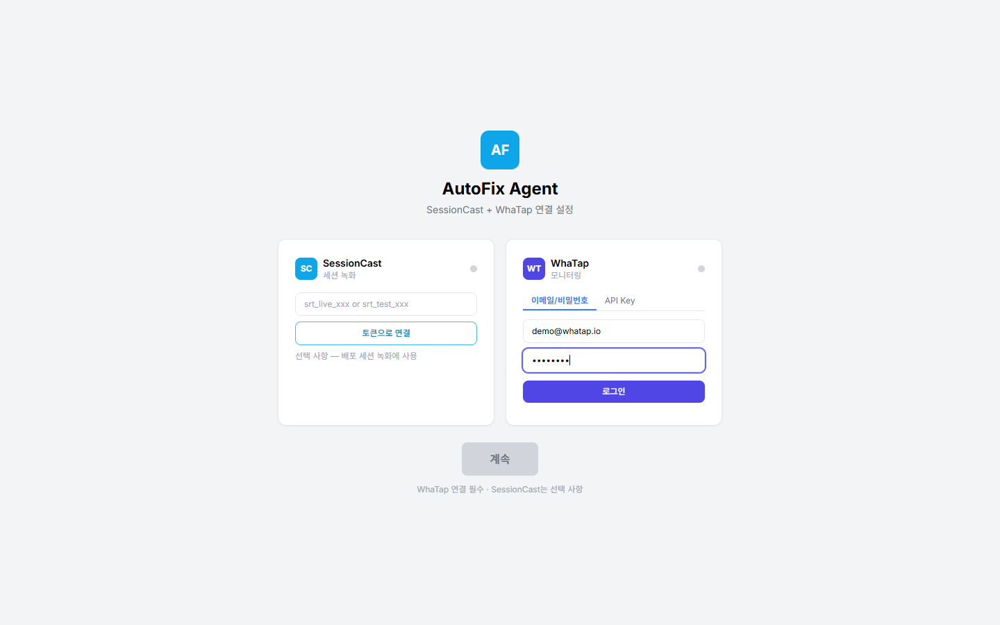
이메일/비밀번호 입력
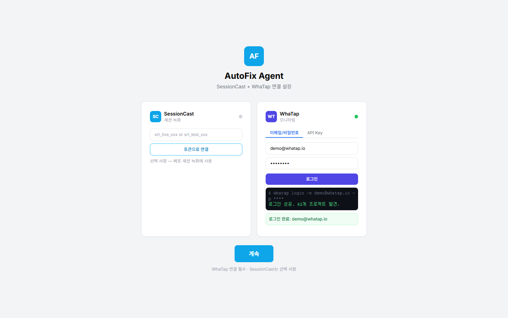
로그인 성공 — 터미널에 결과 표시, 계속 버튼 활성화
로그인 성공 시 WhaTap 상태 점이 녹색으로 변경되고, 하단 계속 버튼이 활성화됩니다.
WhaTap 계정 이메일과 비밀번호를 입력하세요.
프로젝트 선택
모니터링할 WhaTap 프로젝트를 선택합니다
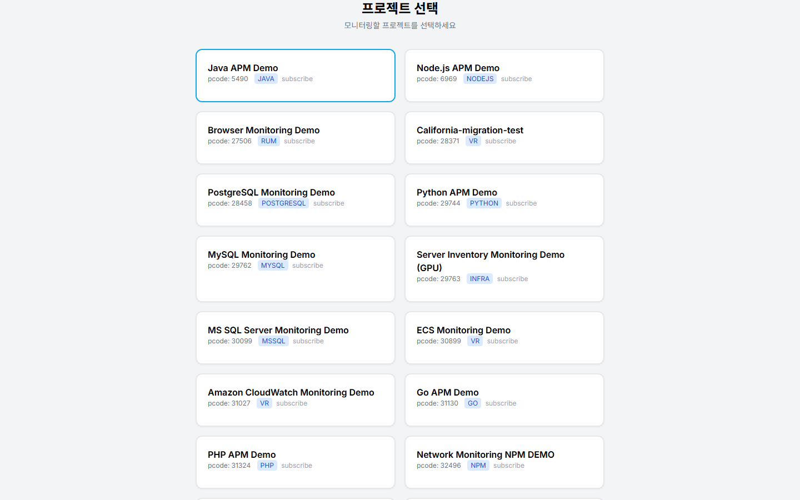
WhaTap 계정에 연결된 프로젝트가 카드 형태로 표시됩니다. 프로젝트 이름, pcode, 유형(JAVA, NODEJS, PYTHON 등)을 확인하고 클릭하면 모니터링이 시작됩니다.
모니터 — 실시간 모니터링
Scout Agent가 3초 간격으로 WhaTap에서 메트릭을 수집합니다
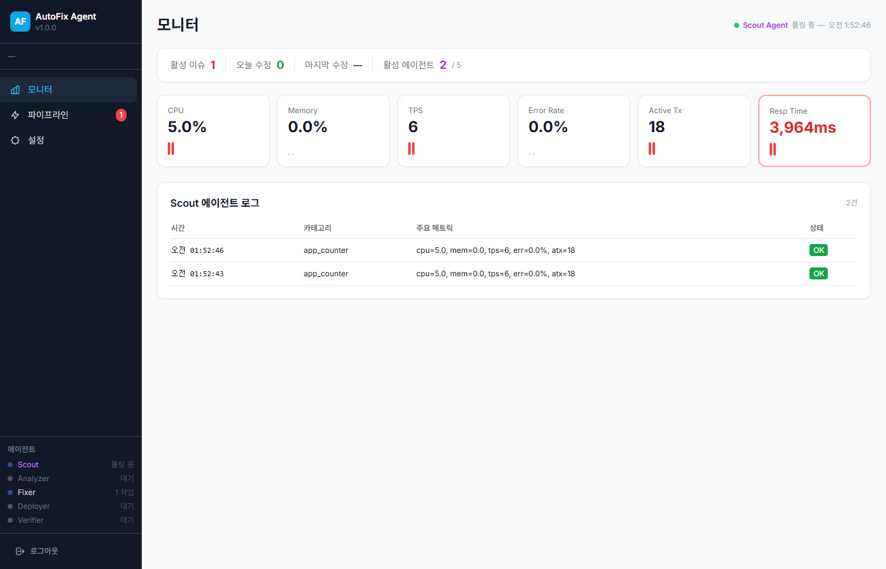
모니터 대시보드 — 메트릭 수집 시작 직후
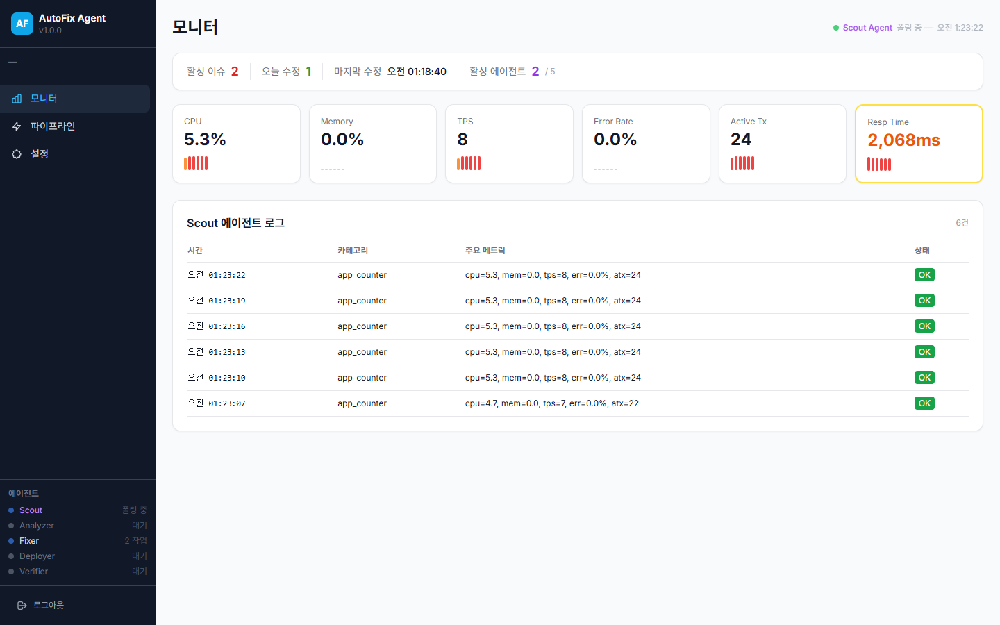
데이터 수집 중 — 메트릭 값이 표시되고 이상 감지가 시작된 모습
상단 요약: 활성 이슈, 오늘 수정, 마지막 수정, 활성 에이전트
메트릭 카드: CPU, Memory, TPS, Error Rate, Active Tx, Resp Time — 임계값 초과 시 테두리 색상 변경
Scout 에이전트 로그: 수집된 메트릭 기록과 상태(OK / WARN / ISSUE)
좌측 사이드바: 페이지 네비게이션 + 에이전트 상태 (Scout, Analyzer, Fixer, Deployer, Verifier)
파이프라인 — 자동 수정 현황
이상 감지 시 자동 생성되는 수정 파이프라인 목록
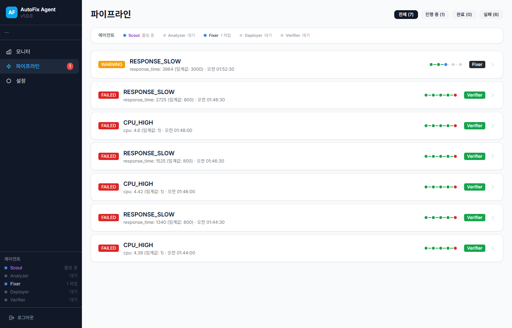
필터: 전체 / 진행 중 / 완료 / 실패
에이전트 상태 바: 각 에이전트의 현재 상태와 작업 수 실시간 표시
파이프라인 항목: 이슈 타입, 메트릭 값, 임계값, 감지 시간, 5단계 진행 상태(미니 도트)
지원 이슈 유형:
| 이슈 타입 | 메트릭 | 심각도 | 자동 수정 |
|---|---|---|---|
| CPU_HIGH | CPU 사용률 | CRITICAL | 가능 (GitHub 연동 시) |
| MEMORY_HIGH | 메모리 사용률 | WARNING | 가능 |
| ERROR_SPIKE | 에러율 | CRITICAL | 가능 |
| RESPONSE_SLOW | 응답 시간 | WARNING | 권장 조치만 |
| DISK_FULL | 디스크 사용률 | CRITICAL | 가능 |
| DB_POOL_EXHAUSTED | DB 커넥션 풀 | CRITICAL | 가능 |
설정 — 연결, AI 분석, 임계값
서비스 연결 상태, AI 분석 제공자, 임계값, 데이터 관리
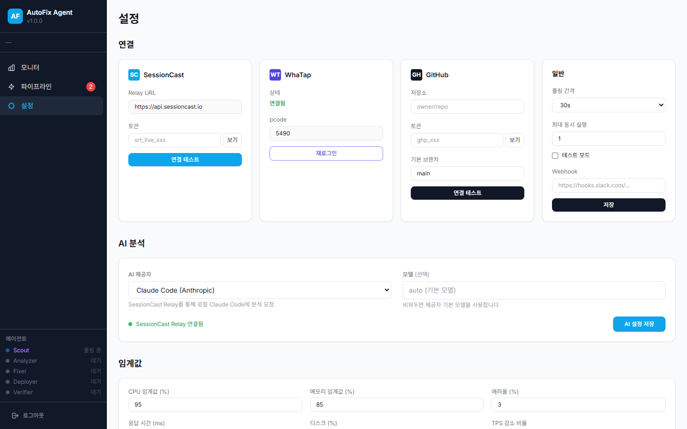
연결: SessionCast (세션 녹화), WhaTap (모니터링), GitHub (코드 저장소), 일반 (폴링 간격, 동시 실행)
AI 분석: Claude Code, Codex CLI, Gemini CLI, Cursor CLI, Ollama 중 선택
임계값: CPU, 메모리, 에러율, 응답 시간, 디스크, TPS 감소 비율
데이터 관리: 데이터 초기화, 로그아웃 및 전체 초기화
AI 분석 — Claude Code (기본), SessionCast Relay 연결 상태
AI 제공자 변경 — Codex CLI 선택 예시
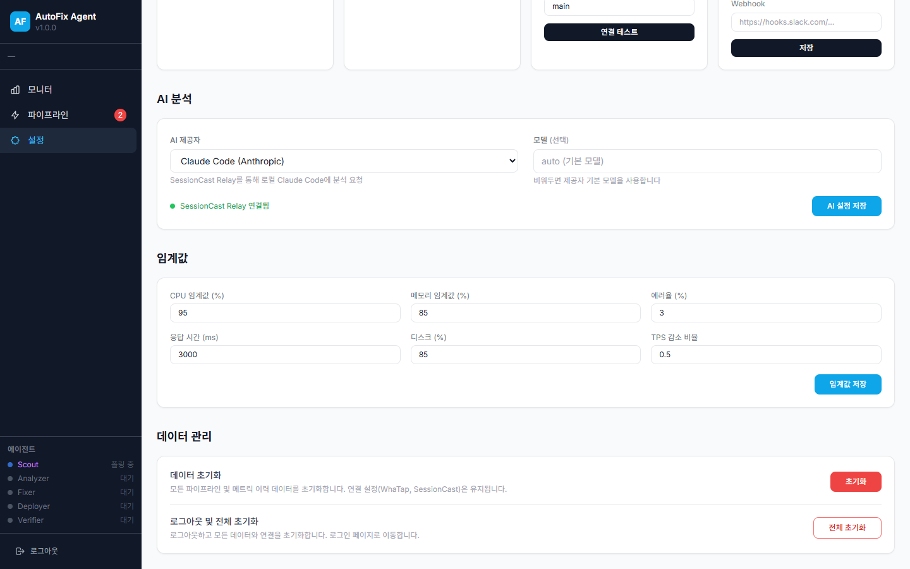
브라우저를 닫아도 서버가 실행 중이면 분석은 계속됩니다. 데이터는 서버 메모리에 저장되며, 서버 재시작 시 초기화됩니다.
실제 배포 vs 시뮬레이션 모드
GitHub 연동 여부에 따라 배포 방식이 달라집니다
실제 배포 모드
GitHub + SessionCast 연동 시
- 1. Fixer — AI가 코드 diff를 생성하고 자동 PR 생성
- 2. Deployer — Git merge → CI/CD 배포 실행, SessionCast로 세션 녹화
- 3. Verifier — 배포 후 메트릭 재측정, PASS/FAIL 자동 판정
필요 조건: GitHub 토큰 + 저장소 설정
시뮬레이션 모드
GitHub 미연동 시 (기본 동작)
- 1. Fixer — AI가 권장 조치 목록을 생성 (코드 수정 대신)
- 2. Deployer — 시뮬레이션 터미널 UI로 배포 과정 시각화
- 3. Verifier — Before/After 메트릭 비교, 수동 조치 대기(PENDING)
별도 설정 불필요 — GitHub 미연동 시 자동 전환
시뮬레이션 모드는 언제 사용되나요?
- GitHub 토큰이 설정되지 않은 경우 (기본 상태)
- 이슈 유형이 코드 수정이 아닌 설정 변경이나 인프라 조치가 필요한 경우 (예: RESPONSE_SLOW)
- Fixer Agent가
autoFixAvailable: false로 판단한 경우
시뮬레이션 모드에서도 다음은 실제로 동작합니다:
- Scout Agent의 메트릭 수집 — WhaTap API에서 실제 메트릭을 폴링
- Analyzer Agent의 AI 분석 — SessionCast Relay를 통해 실제 LLM(Claude Code 등)이 분석
- Verifier Agent의 메트릭 재확인 — 배포 후 WhaTap에서 실제 메트릭을 다시 측정
시뮬레이션 모드 상세
Deployer Agent와 Verifier Agent의 시뮬레이션 동작 흐름
Deployer Agent — 시뮬레이션 터미널
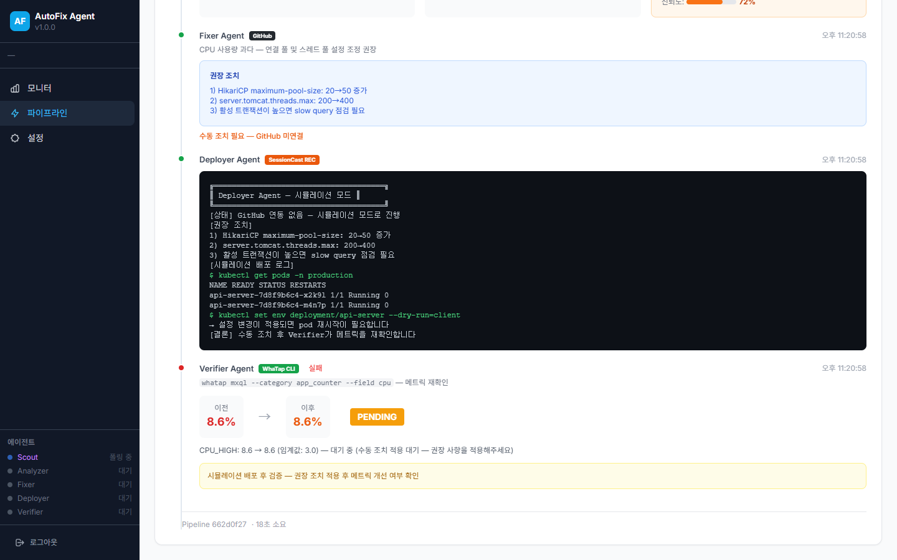
╔══════════════════════════════════════╗
║ Deployer Agent — 시뮬레이션 모드 ║
╚══════════════════════════════════════╝
[상태] GitHub 연동 없음 — 시뮬레이션 모드로 진행
[권장 조치]
1) HikariCP maximum-pool-size: 20→50 증가
2) server.tomcat.threads.max: 200→400
3) 활성 트랜잭션이 높으면 slow query 점검 필요
[시뮬레이션 배포 로그]
$ kubectl get pods -n production
NAME READY STATUS RESTARTS
api-server-7d8f9b6c4-x2k9l 1/1 Running 0
api-server-7d8f9b6c4-m4n7p 1/1 Running 0
$ kubectl set env deployment/api-server --dry-run=client
→ 설정 변경이 적용되면 pod 재시작이 필요합니다
[결론] 수동 조치 후 Verifier가 메트릭을 재확인합니다
시뮬레이션 터미널이 보여주는 내용:
- [상태] — GitHub 연동 여부, 시뮬레이션 모드 안내
- [권장 조치] — Fixer Agent가 분석한 구체적인 조치 목록
- [시뮬레이션 배포 로그] — 실제 배포 시 실행될 명령어 시뮬레이션 (
kubectl,docker등) - [결론] — 다음 단계 안내 (수동 조치 → Verifier 메트릭 재확인)
Verifier Agent — Before/After 비교
시뮬레이션 모드에서의 Verifier 동작:
- 배포(시뮬레이션) 후 10초 대기
- WhaTap에서 After 메트릭을 재측정
- Before 값과 After 값을 비교하여 판정
시뮬레이션 모드에서 PENDING은 정상입니다. 권장 조치를 수동으로 적용한 후, 다음 Scout 폴링 주기에서 자동으로 개선 여부가 확인됩니다.
CPU_HIGH 파이프라인 상세
CPU 사용률 임계값 초과 — 자동 감지 → AI 분석 → AI HTML 수정안 → 시뮬레이션 배포 → 검증
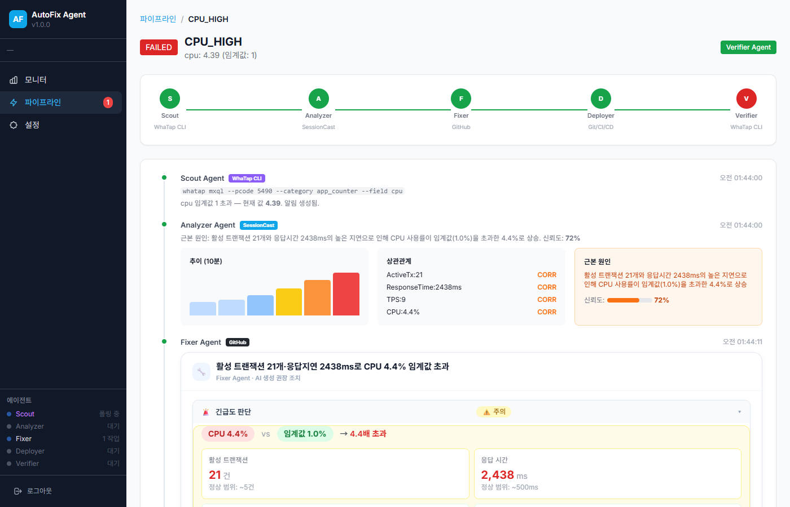
파이프라인 상단에 이슈 타입, 현재 값, 임계값, 5단계 진행 상태 바가 표시됩니다.
Analyzer Agent — AI 근본 원인 분석
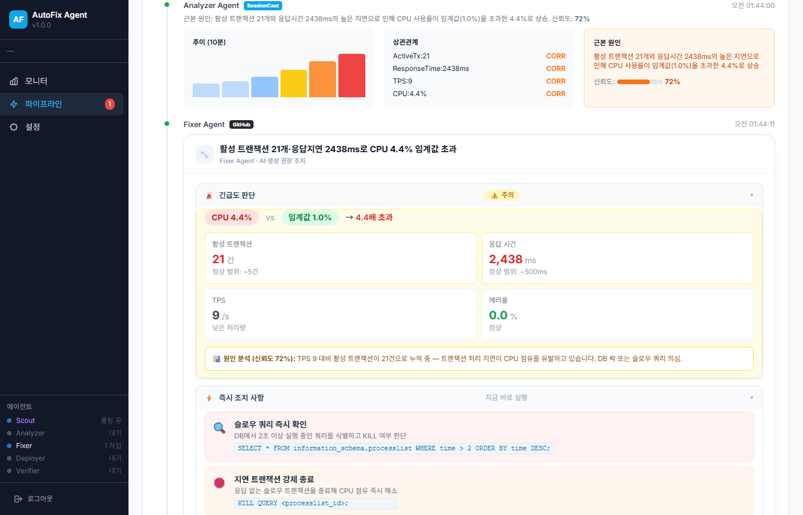
Fixer Agent — AI가 직접 생성한 HTML UI 카드
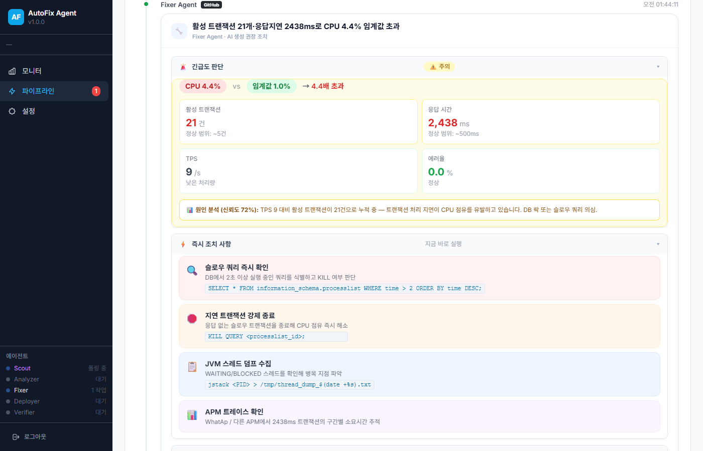
AI가 Tailwind CSS로 직접 디자인한 권장 조치 카드:
- 메트릭 카드 그리드 — 활성 트랜잭션, 응답 시간, TPS, 에러율을 시각적으로 비교
- 접이식 섹션(
<details>) — 긴급도 판단, 즉시 조치, 설정 변경, 모니터링 포인트 - 다크 코드 블록 — SQL 쿼리, jstack/kill 명령어, application.yml 설정
- 매번 다른 레이아웃 — 동일한 이슈 타입이라도 메트릭 값에 따라 UI 구성이 달라짐
같은 CPU_HIGH, 다른 AI 디자인
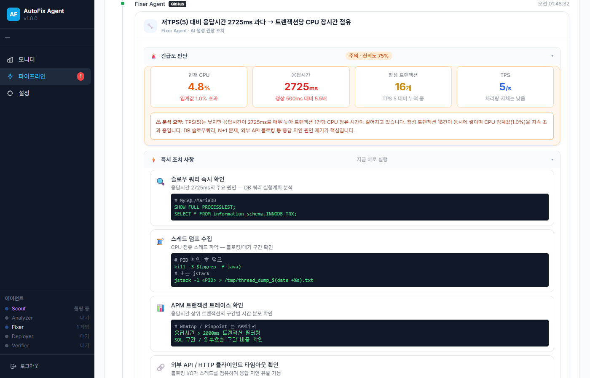
같은 CPU_HIGH 이슈지만 AI가 완전히 다른 레이아웃으로 생성했습니다 — 3열 메트릭 카드, MySQL/jstack 명령어, APM 트레이스 확인 등.
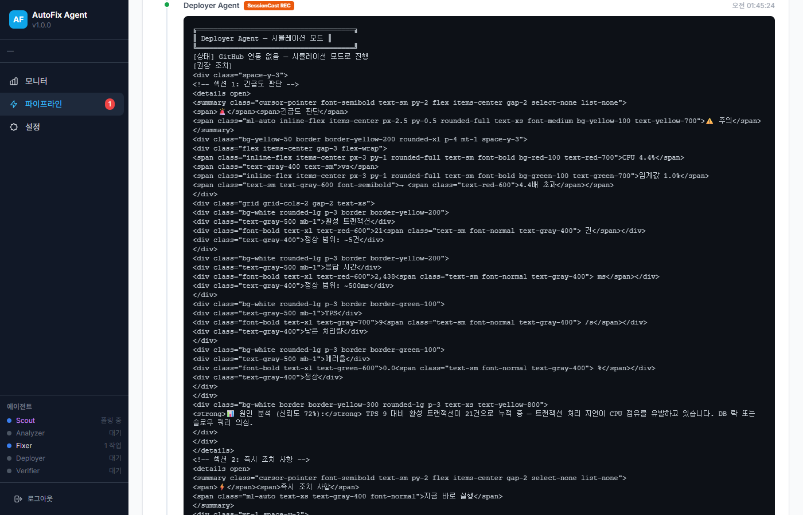
Deployer: 시뮬레이션 배포 터미널
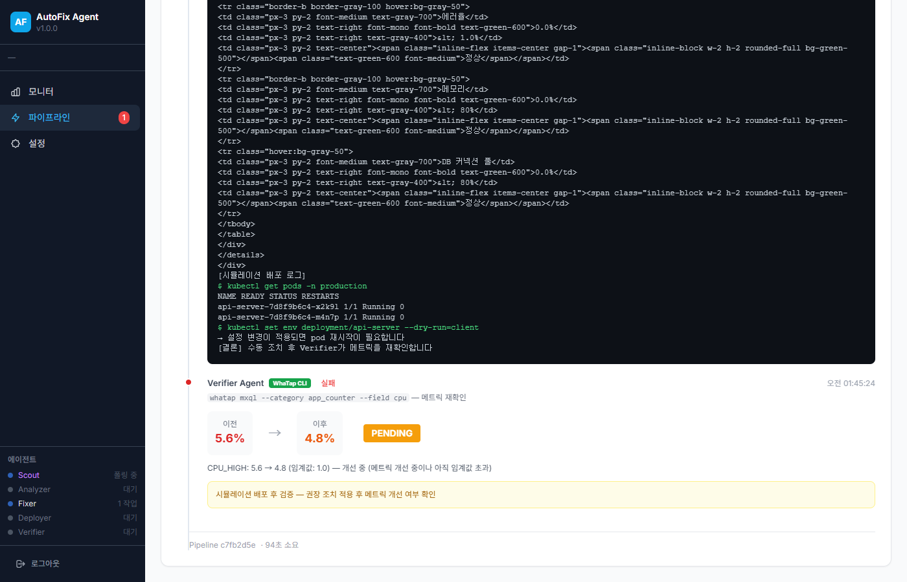
Verifier: Before/After 메트릭 비교
RESPONSE_SLOW 파이프라인 상세
응답 시간 지연 감지 — AI 원인 분석 + AI HTML 권장 조치
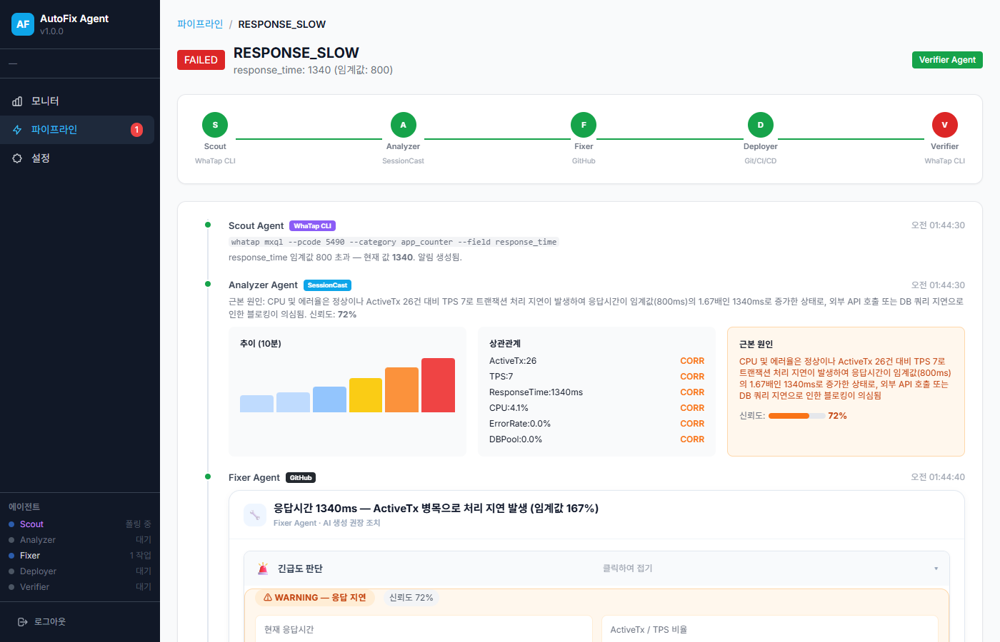
Analyzer Agent — AI 근본 원인 분석
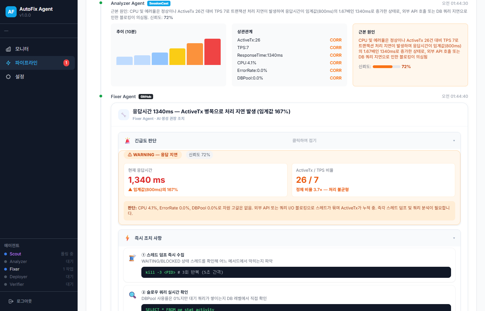
Fixer Agent — AI HTML 권장 조치
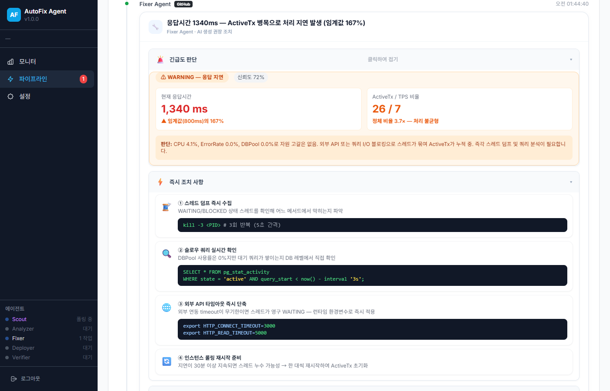
AI가 응답 지연 상황에 맞게 설계한 UI:
- 응답시간 + ActiveTx/TPS 비율 카드
- 스레드 덤프 수집, 슬로우 쿼리 확인, 외부 API 타임아웃 설정 등 구체적 조치
- PostgreSQL
pg_stat_activity쿼리, 환경변수 설정 명령어 포함
같은 RESPONSE_SLOW, 다른 AI 디자인
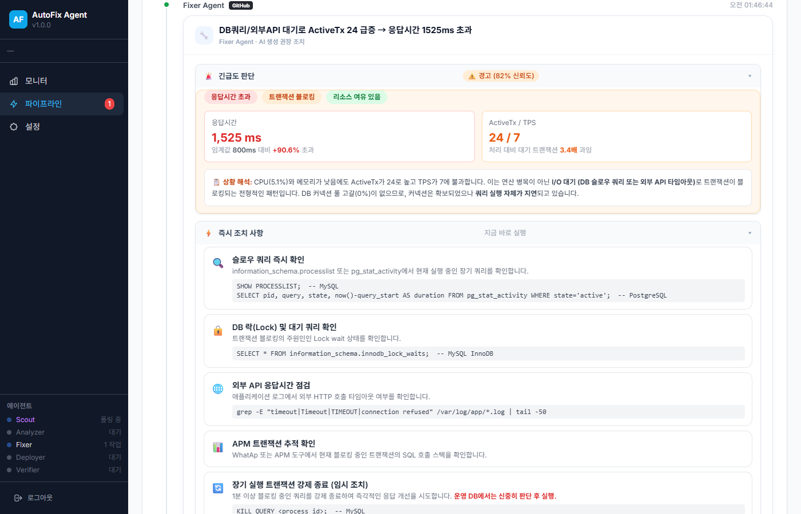
같은 RESPONSE_SLOW지만 다른 메트릭 값(ActiveTx 24, 응답 1525ms)에 따라 컬러 배지 레이아웃, DB 락 확인, 장기 트랜잭션 강제 종료 등 다른 UI와 조치를 생성했습니다.
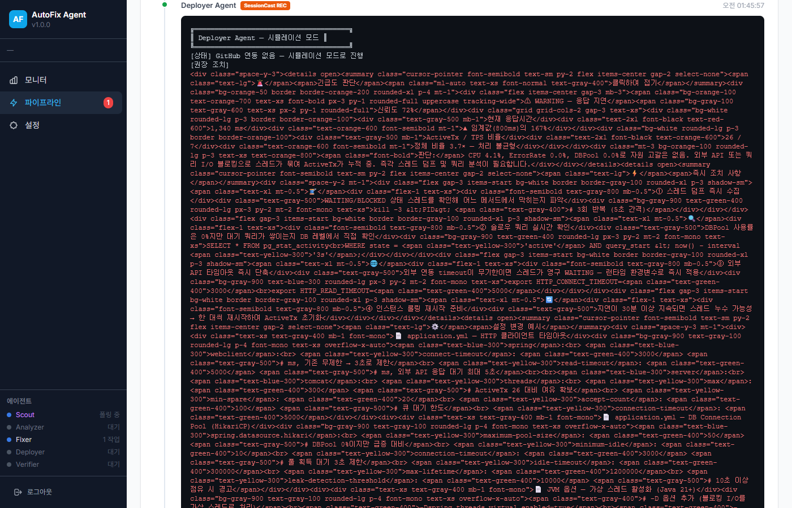
Deployer: 시뮬레이션 배포 + 권장 조치 기록
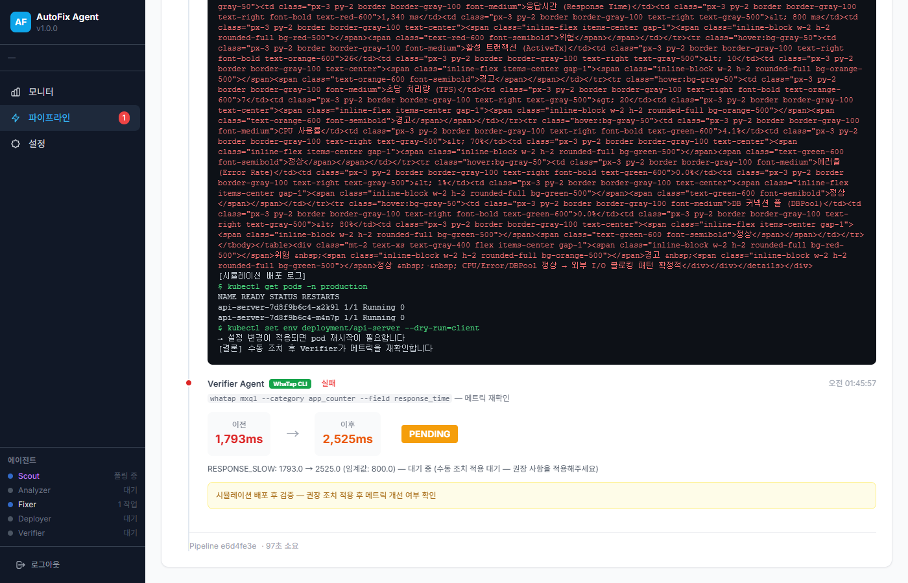
Verifier: Before/After 메트릭 비교
진행 중(IN_PROGRESS) 파이프라인
아직 모든 단계를 완료하지 않은 파이프라인
파이프라인이 생성되면 IN_PROGRESS 상태로 시작합니다. 각 에이전트가 순차적으로 실행되며, 아직 도달하지 않은 단계는 WAITING으로 표시됩니다.
- Scout → Analyzer → Fixer → Deployer → Verifier 순으로 진행
- SessionCast Relay 연결 시 AI 분석/수정은 LLM 호출을 기다리므로 수 초~수십 초 소요
- 진행 중인 파이프라인은 파이프라인 목록에서 파란색 진행 바로 표시됩니다
- 상세 페이지에서 완료된 단계의 결과를 실시간으로 확인할 수 있습니다
파이프라인 상태 흐름:
Verifier까지 완료되면 COMPLETED, 중간에 오류 발생 시 FAILED로 변경됩니다.
AI Scout — 지능형 메트릭 분석
프로젝트 타입에 무관하게 AI가 자동으로 메트릭을 탐색하고 이상을 감지합니다
기존 방식의 한계: APM(CPU, Memory, TPS 등) 메트릭만 하드코딩된 임계값으로 비교 — Browser, DB, Kubernetes 등 다른 프로젝트 타입은 지원 불가
AI Scout 방식: AI가 프로젝트를 분석하여 어떤 메트릭이 중요한지 자동 판단, 임계값과 MXQL 쿼리까지 생성
2단계 동작 방식
- 프로젝트 연결 시 WhaTap Spot API 1회 호출
- AI에게 "이 프로젝트에서 무엇을 모니터링해야 하는가?" 요청
- AI가 프로젝트 타입 인식 + 핵심 메트릭 10개 선정
- 각 메트릭의 WARNING/CRITICAL 임계값 설정
- MXQL 쿼리 자동 생성 (상세 데이터 조회용)
- 매 폴링마다 프로파일의 메트릭만 확인
- 임계값 초과 항목이 있을 때만 AI 호출 (비용 절감)
- 초과 항목에 대해 MXQL 시계열 보강 조회
- 선별된 데이터만 AI에게 전달 (경량화)
- 이슈 감지 시 파이프라인 자동 생성
프로젝트별 AI Discovery 결과
AI가 프로젝트 타입에 따라 자동으로 선정한 모니터링 대상 메트릭:
Node.js 특화 메트릭(heap_usage, event_loop_lag)을 AI가 자동 선정
Core Web Vitals(LCP, FID, CLS)와 브라우저 성능 메트릭을 자동 선정
DB 특화 메트릭(active_sessions, lock_wait, slow_query, deadlock)을 자동 선정
핵심 포인트: 코드에 메트릭 종류를 하드코딩하지 않습니다. AI가 WhaTap Spot API 응답을 분석하여 프로젝트에 맞는 메트릭을 자동으로 찾고, 임계값과 MXQL 쿼리를 생성합니다. 새로운 프로젝트 타입이 추가되어도 코드 변경 없이 동작합니다.
AI Scout 분석 사례 (멀티 프로젝트)
WhaTap 데모 프로젝트에서 AI Scout가 실제로 감지하고 분석한 이슈들
Java APM Java APM Demo — RESPONSE_TIME, APDEX_LOW
AI Scout가 응답시간 초과와 APDEX 저하를 감지하고 DB 커넥션 풀 포화를 근본 원인으로 분석
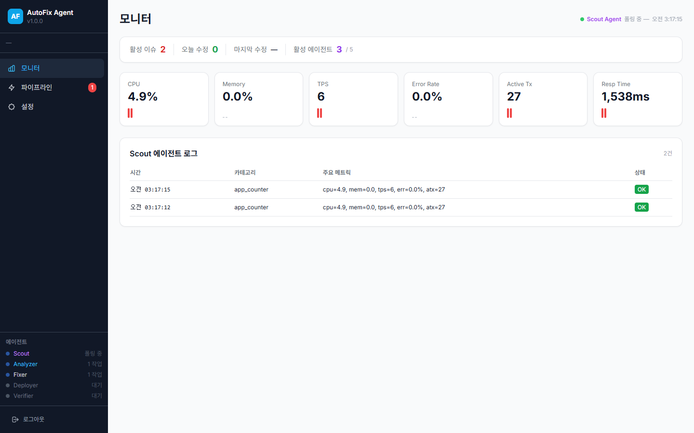
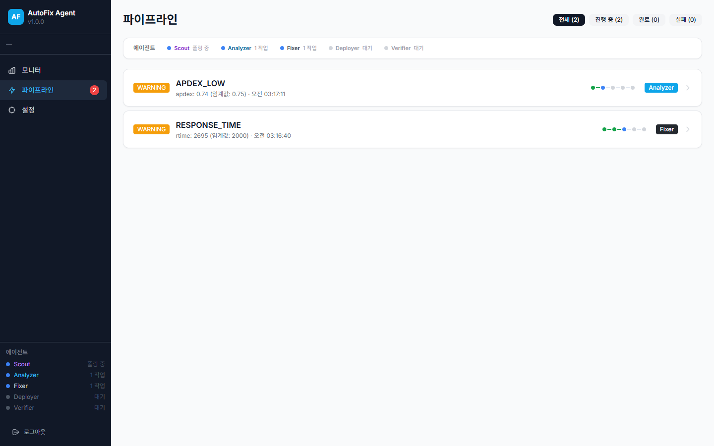
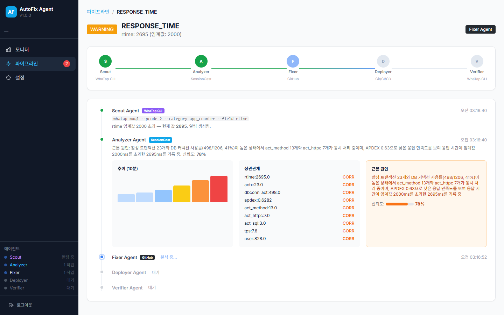
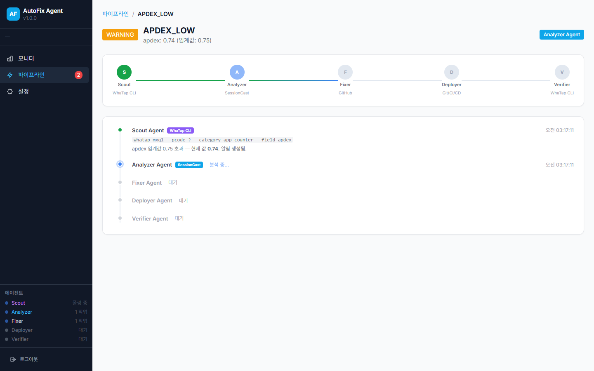
Node.js APM Node.js APM Demo — DB_CONNECTION_POOL, RESPONSE_TIME, APDEX
AI가 Node.js 특화 메트릭(heap_used, event_loop_lag)을 자동 선정하고, DB 커넥션 풀 1419% 초과를 감지
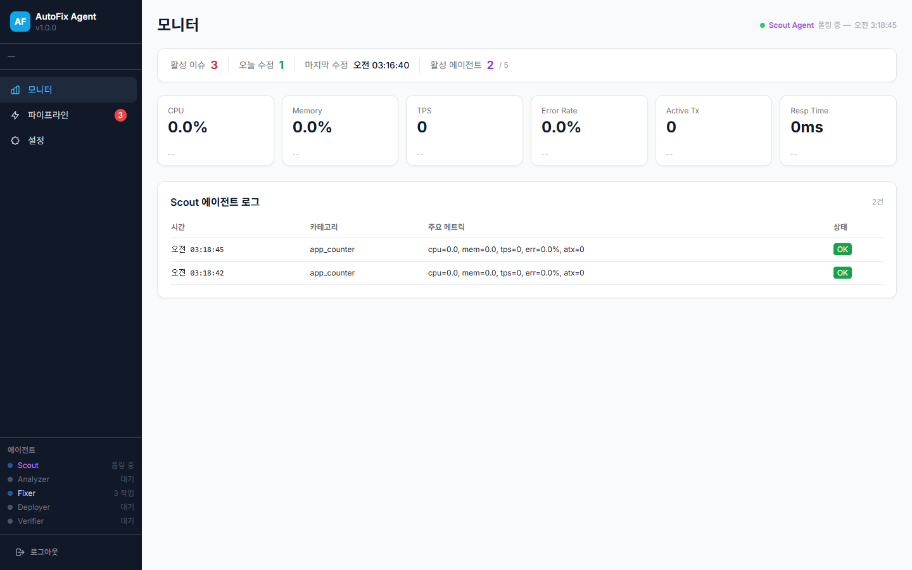
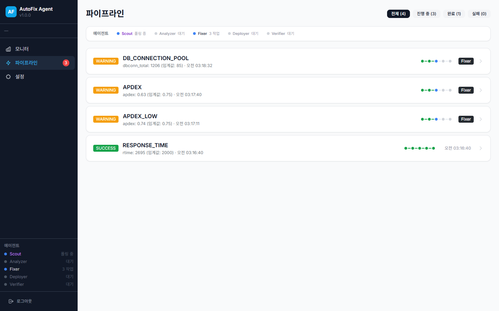
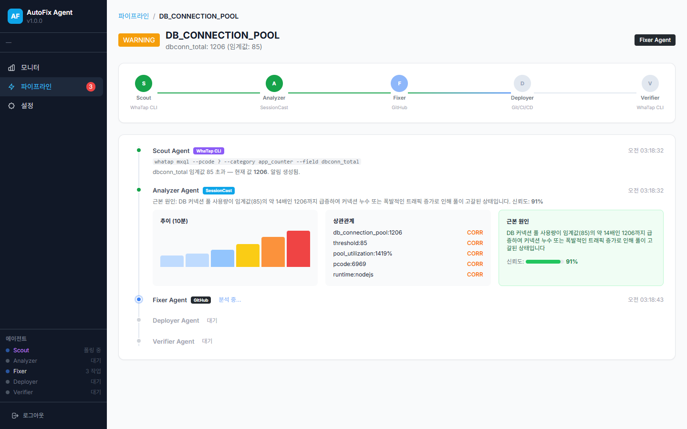
Python APM Python APM Demo — DB_CONNECTION_POOL, DB_POOL_EXHAUSTION, RESPONSE_TIME
Python 서버에서 DB 커넥션 풀 고갈과 응답시간 초과를 동시 감지, 3개 이슈 타입 생성
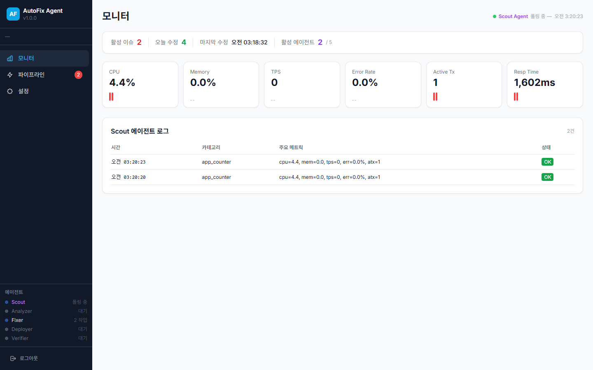
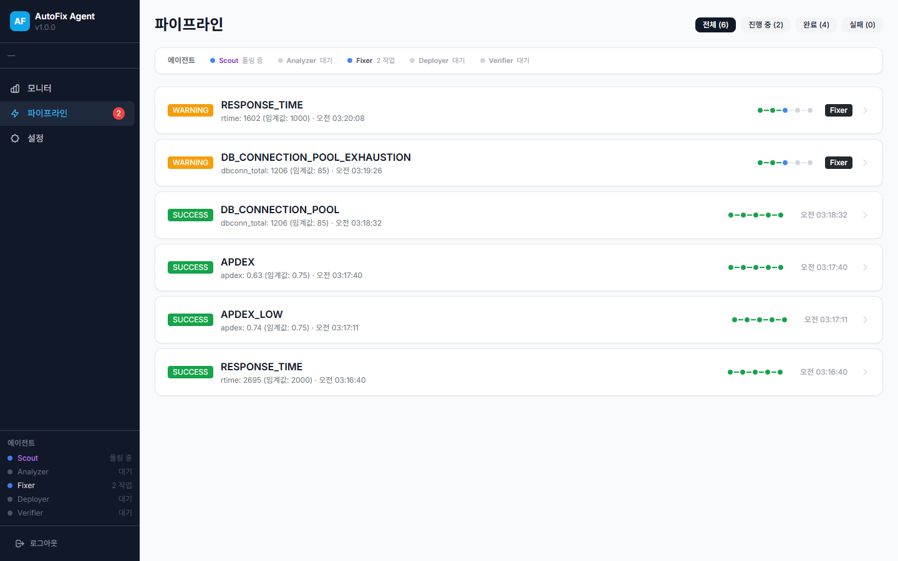
PostgreSQL DB PostgreSQL Monitoring Demo — DB_CONNECTION_POOL, DB_POOL_EXHAUSTION, RESPONSE_TIME
DB 프로젝트에서 AI가 active_sessions, lock_wait, slow_query 등 DB 특화 메트릭을 자동 선정하고 분석
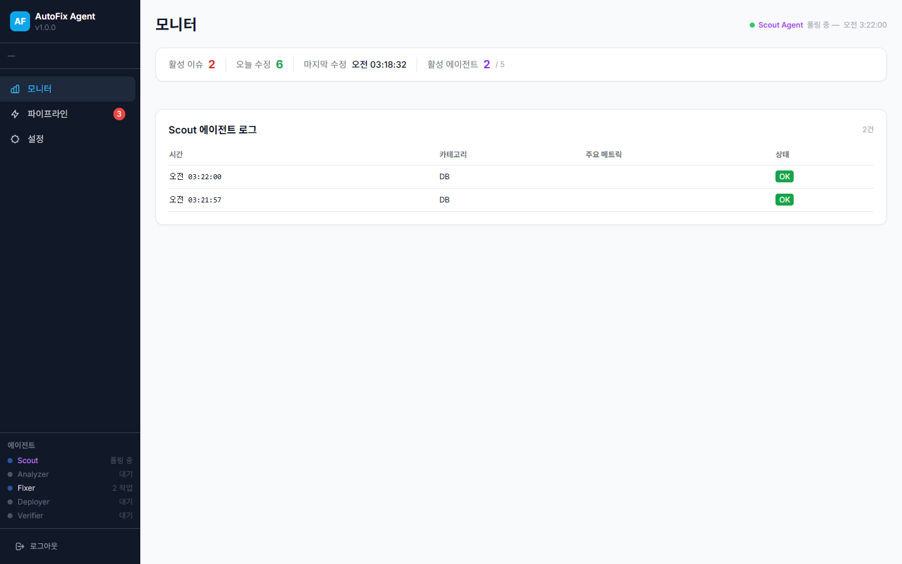
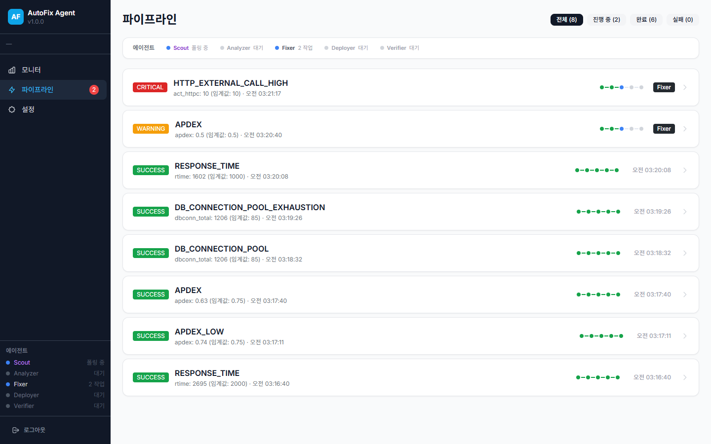
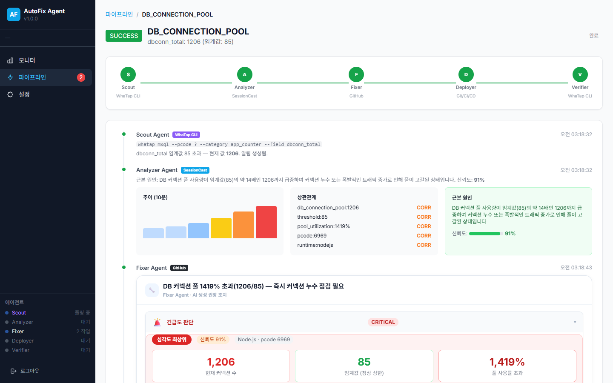
Go APM Go APM Demo — DB_CONNECTION_POOL, DB_POOL_EXHAUSTION, APDEX_ANOMALY
Go 서버에서 APDEX 이상 패턴을 감지 — 값이 정상(1.0)이지만 활성 트랜잭션 부하를 AI가 포착
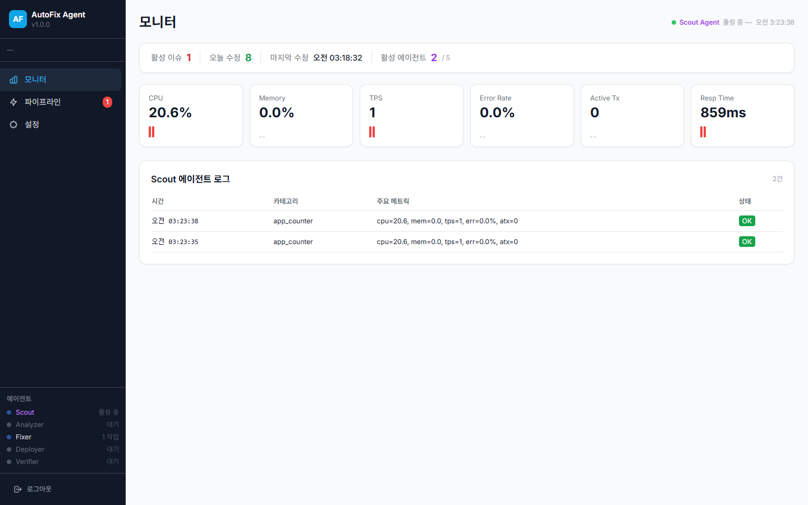
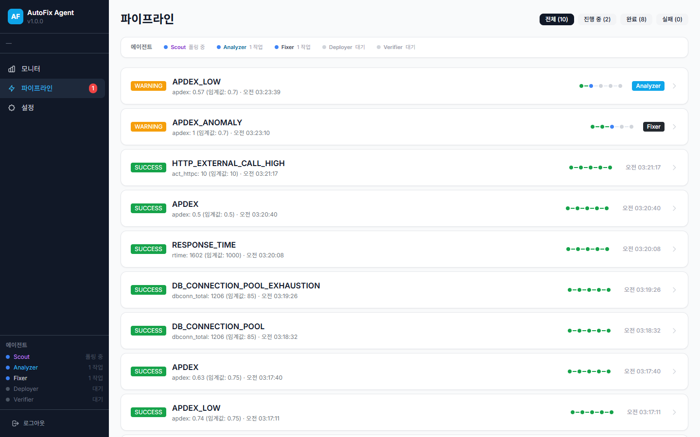
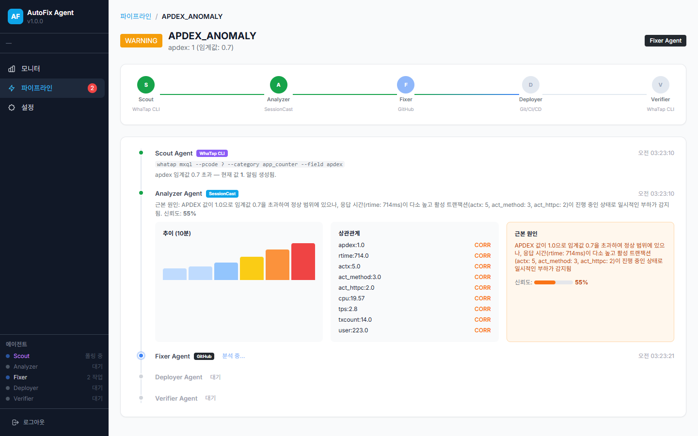
WhaTap 데모 프로젝트 지원 범위: Java APM, Node.js APM, Python APM, Go APM, PHP APM, .NET APM, Browser Monitoring, PostgreSQL, MySQL, MS SQL, Oracle, Redis, MongoDB, Kubernetes, ECS, CloudWatch, Network NPM, Server(GPU) 등 60+ 프로젝트 타입에서 AI Scout가 동작합니다. 프로젝트 타입별 메트릭은 AI가 자동으로 탐색합니다.
파이프라인 흐름 구조
5단계 에이전트 파이프라인
1. Scout Agent — WhaTap CLI
WhaTap API에서 3초 간격으로 메트릭(CPU, 메모리, TPS, 에러율, 응답시간, DB풀)을 폴링합니다. 임계값 초과 시 자동으로 파이프라인을 생성합니다.
2. Analyzer Agent — SessionCast Relay → LLM
SessionCast Relay를 통해 로컬 AI CLI(Claude Code 등)에 한국어로 분석을 요청합니다. 근본 원인, 상관 메트릭, 신뢰도를 산출합니다. SessionCast 미연결 시 규칙 기반 폴백 분석을 수행합니다.
3. Fixer Agent — GitHub / AI
분석 결과를 바탕으로 코드 수정(diff) 또는 권장 조치를 생성합니다. GitHub 연동 시 자동 PR 생성, 미연동 시 권장 조치 목록을 제시합니다.
4. Deployer Agent — Git/CI/CD 또는 시뮬레이션
GitHub 연동 시 실제 배포(merge → deploy), 미연동 시 시뮬레이션 모드로 동작합니다. 시뮬레이션에서는 배포 과정을 터미널 UI로 시각화하며, 권장 조치를 기록합니다.
5. Verifier Agent — WhaTap CLI
배포(또는 시뮬레이션) 후 WhaTap 메트릭을 재확인합니다. Before/After 비교로 해결됨(PASS), 개선 중(IMPROVING), 대기 중(PENDING), 임계값 초과 지속(FAIL)을 판정합니다.